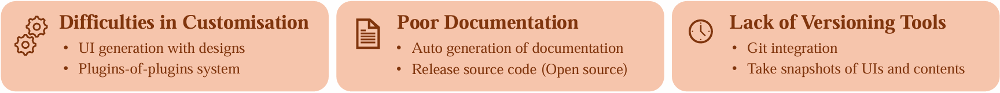
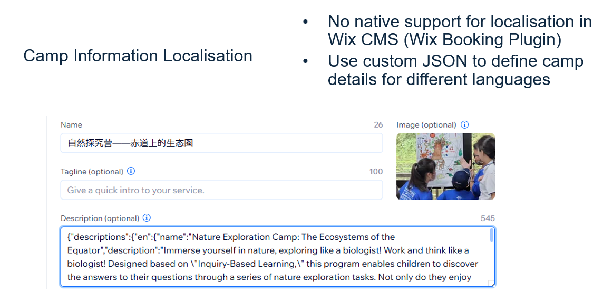
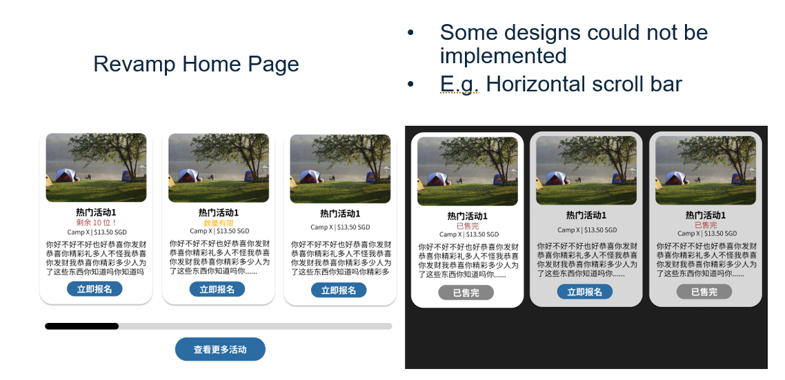
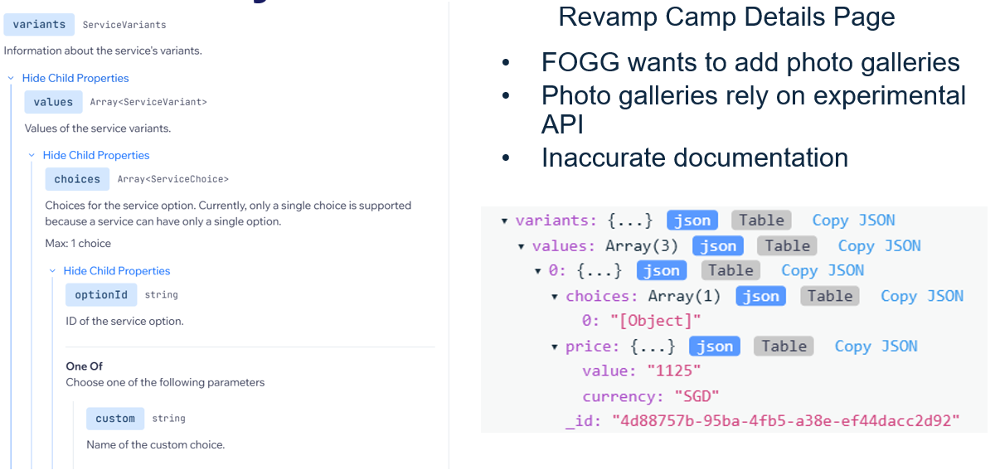
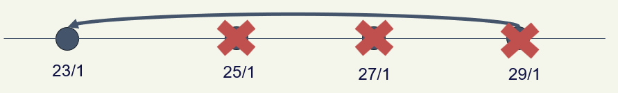
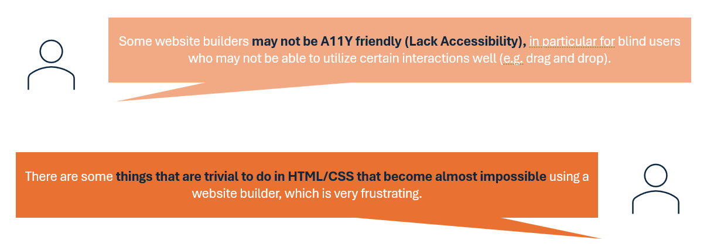
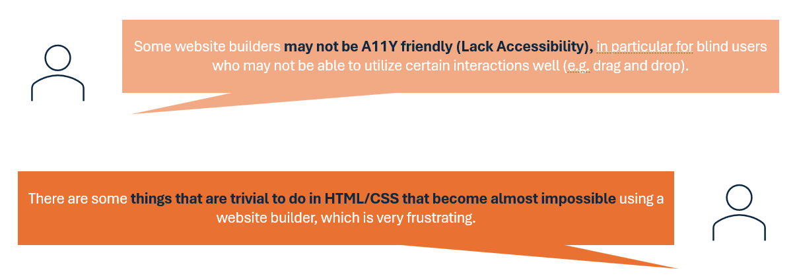

Limitations of Website Builders
We found lack of customisability, inaccurate documentation, and poor versioning tools to be the most common limitations in website builders. These findings remain consistent across case studies and user surveys.
Case Studies
We help FOGG, a company that designs learning programmes for children, to build a website for their business need. We take over their existing websites built on Wix, and build on top of it to identify the limitations of existing website builders. We also conduct a case study on website builders such as WordPress and 10Web AI Builder to obtain a deeper understanding of website builders' features and limitations.
The followings are the limitations we found in the case studies:
- Lack of customisability
- No native support on localisation
- Unsupported designs
- Inaccurate documentation The documentation provided by the website builders is often inaccurate or incomplete, making it difficult to understand how to use certain features.
- Wix Bookings API returns erroneous error responses that are not documented, leading to confusion.
- We also encountered some fields returned in the responses without explanations on what they are used for.
- Poor versioning tools We found that the versioning tools provided by the website builders are not sufficient for our needs.
- For example, Wix's versioning tools do not allow us to compare different versions of the website.
- We also found that all editors shared the same revision. If one user reverts, all users are forced to revert.
- We also found that the versioning tools only maintain a linear history. Reverting will erase all changes after the recovered snapshot.
There were no native support for localisation in Wix CMS (Wix
Booking Plugin). We had to use Wix Velo (Wix's JavaScript-based
development platform) to implement the localisation feature.
See Image

Some designs are not supported by the website builder, such as
calendars with custom designs or scroll bars. We had to either
implement workarounds using
custom elements
or forgo certain design elements altogether.
See Image

For example:
See Image
See Image
User Surveys
We collected 21 valid responses from the user survey after filtering
out those that did not meet the criteria (e.g., irrelevant responses,
responses finishing too quickly).
The survey results show that the most common limitations in
website builders are lack of customisability,
poor editing experience, inaccurate documentation, and
poor versioning tools. These findings are consistent with the
case studies conducted.
 
